Chapter 2 covers the networks and their structures. First, the differences between transmission and distribution are addressed. The stations are also discussed in this chapter. The structures of most medium and low voltage networks used in the Netherlands are explained. The chapter concludes with a description of the connections for the various connection categories.
The purpose of an electricity grid is to transport electrical power from the locations where it is generated to the locations where it is used. This goal is achieved in a socially responsible manner, with the desired quality and at the lowest possible costs. In addition to quality, supply reliability is considered very important due to the significant societal importance of electricity supply. Due to the good reputation of electricity companies, it is assumed that supply reliability is sufficient. However, absolute supply reliability is not possible, as components can always be disrupted, either by their own defect or by an external cause. One way to manage disruptions is to build in sufficient reserve. Since this involves additional costs, there will always be a trade-off between the costs and benefits of supply reliability. Optimal supply reliability does not aim to minimize risk and consequences but to achieve an acceptable level. In summary, the main requirements for electricity grids are (Kundur, 1994):
The term 'grid' is defined in the Electricity Act 1998 in Article 1, subsection i. It essentially means that an electricity grid is the entirety of operational resources ('connections and tools') through which all producers and consumers of electrical energy are connected and through which electrical energy is transported. The definition excludes connections and tools that lie within the installation of a producer or a consumer. To distinguish it from private grids, the term 'grid' is also referred to as a 'public grid'.
The assets are the primary components used in the primary process of electricity supply. Additionally, there are secondary systems and components that support the primary process. An example of a secondary system is the security system (discussed in chapter 6). The primary components of the technical infrastructure have a long lifespan of 20 to 40 years or longer. Investments in the infrastructure are high, so relatively few changes occur. A new electricity grid is usually planned for the long term.
The electricity grid facilitates the transport of electrical energy from the international level down to the local level for individual consumers (the so-called small users). To make this possible, all electricity grids at local, regional, and national levels are interconnected into a unified electricity supply system. In this system, a distinction is made between the transport function and the distribution function. The transport grid handles power transmissions at the national level. Connections with the grids of neighboring countries are also part of the transport grid. Power plants and the feed-in points of the distribution networks are connected to the transport grid. In the Electricity Act of 1998, the transport grid is described in Article 10 as the 'national high-voltage grid.' A distribution network distributes electrical energy within a region to all connected users. Distribution networks are more branched than transport grids and can be seen as the 'capillaries' of the electricity supply system. In practice, the transport and distribution functions are further subdivided. There is talk of the coupling grid, the transport grid, and the distribution grid at regional and local levels. This is schematically represented in Figure 2.1.

As the size of the rings and the number of connections increase outward, Figure 2.1 illustrates that the regional and local distribution networks, in their entirety (in terms of size), are larger than the transmission networks.
Table 2.1 provides an overview of the types of production units and connections that are linked to the aforementioned networks. The power values mentioned in the table are indicative. The column 'Power per network' indicates the order of magnitude of power transfers occurring in the specified networks.
|
Net |
Production units |
Aangeslotenen |
Power per network |
|
Koppelnet |
Power plant (>500 MW) |
> 1000 MW |
|
|
Transportnet |
Power plant (10-500 MW) Large CHP (>10 MW) Wind farm (>10 MW) |
Large industry with possible own generation (>10 MW) |
> 100 MW |
|
Distribution network, regional |
Medium-sized CHP Wind turbine (0.3-10 MW) |
Grootverbruiker |
< 100 MW |
|
Distribution network, local |
micro-CHP (<0.3 MW) PV systems (<0.3 MW) |
SME (<0.3 MW) Huishoudens |
< 1 MW |
The function is related to the voltage level, because at a high voltage level, more power can be transported than at a low voltage level. As a result, high-voltage networks always have a transport function, and low-voltage networks always have a distribution function. Moreover, the low-voltage level is practical and safe for connecting customer installations. Between the high and low voltage levels, there is a transition area from the transport function to the distribution function. This transition area concerns the medium voltage level. Medium voltage networks usually have a distribution function but sometimes also have a transport function. Despite this ambiguity, electrical grids are usually referred to by their voltage level. Figure 2.2 provides an overview of the voltage levels and transformation steps applied in the Netherlands. This is an overview of standard voltages. Due to innovations, multiple variants in voltage levels and transformation steps may gradually emerge. An example is shown in Figure 2.10.

Hethoogspanningsniveauwith voltages ranging from 110 to 380 kV is indicated in red. The coupling network is designed for voltage levels of 220 and 380 kV, and the transmission networks for voltage levels of 110 and 150 kV. The coupling network and the transmission networks are managed by the national network operator (LNB). The networks of lower voltage levels are managed by the regional network operators (RNB). The boundary between the network of the national network operator (LNB) and the networks of the regional network operators (RNB) is at the primary transformer terminals.
Hettussenspanningsniveauwith voltages ranging from 25 to 50 kV are indicated in green. The networks at these voltage levels have a transport function.
Hetmiddenspanningsniveauwith voltages ranging from 10 to 20 kV are indicated in black. Occasionally, voltages of 3 and 6 kV are also encountered, but these are no longer used in new networks.
Hetlaagspanningsniveauwith a voltage of 400 V is indicated in blue.
The networks of different voltage levels are interconnected using transformer stations. To get an impression of the scale of the networks at the various voltage levels, one can look at the transport capacity. The capacity of the transformer stations between the coupling network and the transport networks is more than 500 MVA. There are several dozen of these stations in the coupling network. The capacity of a transformer station between the transport network and the distribution network, from high voltage to medium voltage, is in the order of 100 MVA. There are approximately 200 of these in the Netherlands. The capacity of a transformer station between the medium voltage and low voltage levels is in the order of 0.2 to 1 MVA.
The distance between stations at different voltage levels also gives an impression of the network's size. The distance between two stations in the coupling network is 35-50 km. The average distance between two stations in the high-voltage network is 15 km (Kling, 1999). The average distance between two stations in the medium-voltage network is approximately 500 m. There can be 250 to 500 network stations connected to a substation. A network station provides connections for 50 to 250 consumers, usually industries and residences, via the low-voltage network.
Table 2.2 provides an overview of the size of the transport and distribution networks in the Netherlands and is derived from Netbeheer Nederland (Netbeheer, 2010). It shows that in 2009, almost all connections at the highest voltage level were above ground, while nearly the entire distribution network was underground. It is also clear that the total distribution network is approximately 20 times larger than the coupling network and the transport network.
|
Functie |
Niveau |
Above ground (km) |
Underground (km) |
|
Koppelnet |
Hoogspanning |
2682 |
3 |
|
Transportnet |
Hoogspanning |
5492 |
3760 |
Distribution, regional |
Middenspanning |
0 |
101965 |
Distribution, local |
Laagspanning |
174 |
145165 |
The regional and local networks up to the meter box of the connected customers are managed by regional network operators (RNO). The annual report of Alliander (2009) provides an example of the extent of the networks at various voltage levels of a large RNO:
The networks at the medium voltage level and the low voltage level are the most branched and therefore the largest in size. For that reason, the focus in this book is primarily on the Dutch medium and low voltage networks and their optimal network design.
The Electricity Act stipulates the quality requirements that a connection must meet. Quality refers to the availability and quality of the voltage and current. The quality of the voltage and current for consumers connected to the distribution networks is detailed in the international standard IEC 50160 and is further discussed in Chapter 11 on 'Power Quality.' The availability of the supply is derived from the reliability of the electricity network and is covered in Chapter 12. Availability is characterized by the number of interruptions per year, the average interruption duration, and the average annual interruption duration. When designing an electricity network, care is taken to minimize the impact of a failure in an asset, whether due to an internal defect or an external cause, on the availability of the supply. For instance, in the event of a short circuit, the faulty asset must be immediately disconnected. Depending on the function or voltage level of the network, either only the asset itself or a portion of the network will be disconnected. To ensure availability, redundancy is built into the electricity network. The degree of redundancy depends on the design and operation and is the result of a cost-benefit analysis. In transmission networks, the number of failures leading to an interruption is very small due to the high level of redundancy. There is significant redundancy because each interruption affects a large number of consumers. For example, the interruption of a substation that feeds 500 network stations, each with an average of 50 consumers, results in an interruption affecting a total of 25,000 consumers. In distribution networks, less redundancy is built in, so a short circuit usually leads to an interruption in part of the network. In medium voltage distribution networks, a short circuit typically affects around 1,000 consumers, and the supply is reasonably quickly restored through switching actions, utilizing the redundancy in the transport capacity of the remaining connections. In low voltage networks, the number of affected consumers is usually no more than a few dozen, and there is no redundancy. One must wait for repairs or an emergency power supply.
When assessing availability and the required redundancy, the focus is usually on the 'Single Failure'. This refers to the failure of a production unit or any element within the electricity supply system. The NMa uses the term 'Single Failure Reserve' (EVSR) concerning operational reliability: the state of a network in which the normal operating condition is maintained when a single failure occurs (Glossary, 2009). The following four levels are defined for describing operational reliability:
A transmission network transfers large amounts of electrical power over long distances. Because the consequences of an interruption in power supply increase with higher voltage levels and are quickly deemed unacceptable, transmission networks are designed and operated with a 'single contingency without power interruption' (n-1). This single contingency must also be in place during maintenance of primary objects in the transmission network. Only in exceptional situations is it sometimes permissible to operate with a risk of power interruption due to a fault.
Hoogspanningsnetten
Transport mainly takes place via high-voltage networks, where the voltage is often higher than the generated or consumed voltage. Because the networks are interconnected at both national and international levels, a stable transmission network with high operational reliability is achieved. The international connection makes it possible to exchange energy between different countries. The power plants are connected to the high-voltage network. This also applies to large decentralized generators, such as clusters of combined heat and power plants and wind farms. The regional medium-voltage or intermediate-voltage networks and large industrial networks are connected to the high-voltage network via transformers. The most common voltage levels are:
Tussenspanningsnetten
An intermediate voltage network transports relatively large electrical power (on the order of 50 to 100 MVA) from the high-voltage grid to supply points for medium-voltage networks. The intermediate voltage network serves as a link between the high-voltage and medium-voltage networks but is not always used. Common voltage levels are 25 kV and 50 kV. Due to the high demands for supply reliability, the TS transmission network often has a single fault reserve without energy interruption. However, a single fault reserve with energy interruption can also occur.
Middenspanningstransportnetten
An MS transmission network transfers a power greater than 5 MVA from a substation to a station further in the network. Such a station is called a switching station. If the distance from the substation to the switching station is too great, depending on the size of the transmission power, a regulating transformer is placed in the switching station, and the name of the switching station changes to regulating station. In a medium voltage transmission network, voltage is not transformed to a low voltage level. Due to the high demands for operational reliability, the transmission network consists of parallel-connected cables with sufficient reserve capacity, which are secured in such a way that the failure of one cable does not interrupt the energy supply (a single fault reserve without energy interruption).
A distribution network distributes the electrical power from the substation, control station, or switch station to the connected users (the end consumers). During this process, the voltage is converted (in various steps) to the level that is ultimately required. The final transformation step between medium voltage and low voltage takes place in the network station, from which the low-voltage cables depart to the connected users. For a long time, the distribution network only distributed electrical power from the substation, control station, switch station, or network station to the customers. Now, decentralized generation, such as wind turbines, CHP units, micro-CHP units, and solar panels, may lead to feedback into the distribution network, resulting in two-way electricity distribution.
Middenspanningsdistributienetten
These networks distribute the required electrical power from the high- and medium-voltage networks to substations where transformation to low-voltage networks occurs. The medium-voltage distribution networks are designed for voltage levels between 1 kV and 25 kV. The most commonly used voltage level is 10 kV. Recent developments, particularly due to the increase in large concentrations of decentralized generation or load, have led to the design of networks at a higher voltage level such as 20 kV. The advantage of this voltage level is that the technology and cost of commercially available equipment do not differ much from those at the 10 kV level, while double the power can be transmitted.
The medium voltage distribution network is usually configured as a ring. In normal operation, this ring is not closed. As a result, the network has a single fault reserve with energy interruption. The power supply can usually be restored by switching and sometimes only with the help of a generator.
Laagspanningsdistributienetten
The medium voltage/low voltage substations feed the low voltage distribution networks, which distribute electrical power to most of the connected users. The low voltage networks are designed for voltage levels up to 1 kV. The most commonly used voltage level is 400 V with a phase voltage of 230 V.
The low voltage network is usually constructed without switching capabilities, resulting in 'no fault reserve'. In the event of a fault, the supply to the connected users is interrupted. In special situations, the network is designed for the restoration of supply, for example, by using a generator. This also applies to industrial networks. Depending on the importance of the continuity of supply, the design can take into account a 'single fault reserve with power interruption'. Distribution networks in the Netherlands are often designed in this manner as well.
A network structure is the entirety of connections between substations, control stations, switching stations, and network stations. Additionally, the structure connects these stations to the end consumers. The connections are typically underground cables. In terms of network configurations, a distinction is made between a radial network (or star network), a ring network, and a meshed network. These concepts will be elaborated on below, as well as the concept of a string.
Radial network
A radial network (also known as a star network or radial grid) has a network structure where a consumption point reaches the substation through a single connection. There are no switching options. Figure 2.6 provides an example of a radial medium voltage network.
An interruption in the radial network leads to a loss of supply.
Ring network
In a ring network, a load point can reach the feeding substation, control station, or switching station via two connections. In distribution networks, ring networks are usually operated radially. To achieve this, the ring is opened approximately halfway, in the so-called network opening. Figure 2.7 provides an example. A fault in a connection then leads to a supply outage, and relocating the network opening restores the power interruption. Branches can occur in a ring network.

Meshed network
In a meshed network, a consumption point can reach the feeding substation, control station, or switching station via more than two connections. If a meshed network is operated radially, the network openings are often situated at nodes where multiple connections converge. Figure 2.9 provides an example.
An interruption in a connection leads to a delivery outage, and relocating the network opening restores the power interruption.
Uitloper
In a ring-shaped or meshed network, one can encounter radial cable sections. These are usually referred to as 'spurs'.
An interruption in a spur leads to a loss of supply.
Streng
A strand is a chain of primary objects that can be disconnected with a single common protection.
The following paragraphs discuss the structures of transmission networks (HS, TS, and MS) and distribution networks (MS and LS). Additionally, a combined structure for MS networks with multiple voltage levels is briefly addressed.
Transmission networks are usually designed in such a way that they deliver electrical energy without interruption, even in the event of a fault. This involves a single fault reserve without energy interruption. The network continues to function well in the event of a single component failure and is therefore n-1 secure. The network has multiple paths from the power source to the loads. This imposes requirements on the protection system, which must ensure that the faulty component is immediately disconnected, maintaining the electricity supply without interruption. Figure 2.3 shows a meshed 50 kV transmission network with HS supply and TS/MS substations. The colors indicate the voltage level (red: HS; green: TS; black: MS).
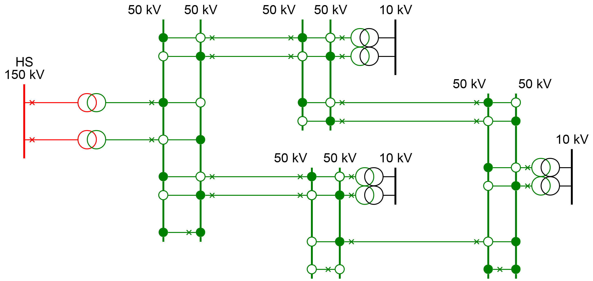
In special situations, it occurs that a substation on the high-voltage side does not contain a busbar system, but the transmission connections from the feeding network are directly connected to the high-voltage side of the transformer. In these networks, it is sometimes allowed for the power supply to be interrupted in the event of a single fault (see figure 2.4). This situation occurs at both TS and HS levels. This configuration is also known as a 'transformer on a stick.'

At the medium voltage (MV) level, the transmission networks are usually not meshed. They consist of two or more parallel cable connections from a substation to a switching station. In the switching station, a regulating transformer can be used to compensate for the voltage drop that occurs because power needs to be transmitted over a long distance. The applied voltage is usually 20 or 10 kV (see Figure 2.5).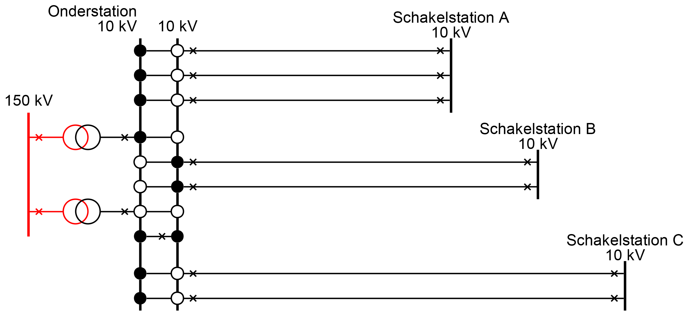
The applied voltage level in medium voltage distribution networks is usually 10 kV. In some networks, 20 kV is also used. The choice for a specific voltage level is usually historically determined. Most medium voltage distribution networks are designed in a ring or meshed configuration but are operated radially. Below, three structures of radially operated distribution networks are explained.
In the substation, the branches of the medium voltage distribution network are connected to the feeding medium voltage bus system of the substation through a circuit breaker (symbol X in the diagrams) and then via a load switch. Each downstream network station in the branch has load switches for the incoming and outgoing cables.
The radial network in figure 2.6 is the simplest configuration. This network does not have any fault reserve. From the substation, feeders extend geographically in all directions of the service area. This configuration is used in areas with low customer concentrations. The networks there are often quite extensive. In this configuration, there are no options for switching in case of a fault. Essentially, the feeders are dead ends. These often contain more network stations than the dead ends in ring-shaped networks in urban areas. This structure is not often used in the Netherlands.

Most distribution networks are constructed in such a way that the ends of the branches meet, forming a ring-shaped structure (see figure 2.7). Somewhere in the ring, a load switch is opened (the network opening). This creates a radial or open-operated ring-shaped structure. A connection can also be made at the boundary of the service areas of two substations. The network opening at that location is then called a network separation.
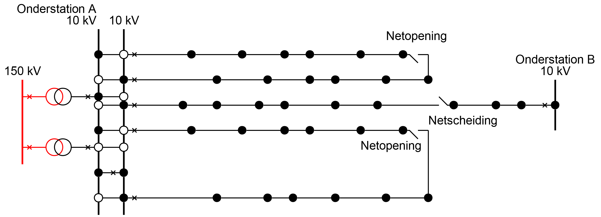
In networks with this structure, terms like main ring, sub-ring, and spur are often used. A main ring starts at the substation and loops back to the substation via a network opening. The main ring then consists of two branches.
A branch of a main ring, which at the end can be connected to the same feeder cable by closing a network opening, is also referred to as a subring.
A branch of a main ring or subring, whose end cannot be connected to another feeder cable by closing a network opening, is called a spur. These are depicted in figure 2.8.
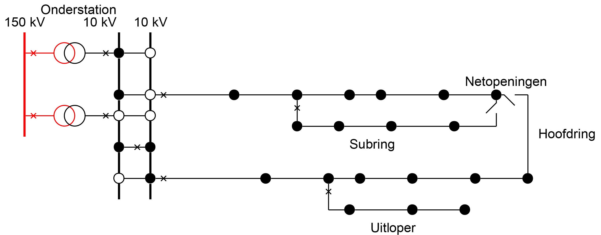
In practice, a main ring contains approximately 20 to 40 network stations. A subring contains about 5 to 10 network stations. Spurs in ring-shaped and meshed networks contain 1 to 3 network stations. The cables of subrings and spurs usually have a smaller conductor diameter than the cables in the main ring.
In the ring-shaped networks of figure 2.7, there is a single fault reserve with fault interruption. The advantage of the open-operated ring-shaped structure is that in case of faults, after isolating the fault by closing the network opening, it can be switched to another section, so that the power supply can be restored relatively quickly. The condition is that the capacity of the sections is sufficient to feed the power of the section being taken over.
The ring-shaped structure of figure 2.7 can be further expanded so that multiple strands from the same or different substations meet at points where network openings are created. In this way, a meshed structure is formed, providing more switching options in case of failures than a network with a ring-shaped structure. The advantage of this structure is that the power of heavily loaded parts of the network can be distributed over multiple strands. This can be particularly desirable in large cities or industrial areas. Figure 2.9 illustrates this.

It is almost never the case that ring-shaped or meshed distribution networks are operated in a meshed manner. In meshed operation, a short circuit could be fed from multiple directions. The short-circuit current would then need to be interrupted at two or more locations, which makes the protection complex and expensive.
In contrast to the transmission networks, the medium-voltage distribution networks with a ring or meshed structure are not suitable for n-1 secure operation but only for a single fault reserve with energy interruption. The protection is designed to shut down the entire section in the event of a short circuit in one of the assets of a section.
Main ring, subring, and spur are usually protected at their feed point. In the event of a single fault, the entire section containing the faulty component will be shut down. If the fault is in a protected subring or spur, only that section will be selectively shut down. After isolating the defective component (by disconnecting it) and relocating the network openings, the power supply can be restored. The failure and recovery process is further described in Chapter 12 (reliability).
With the strong growth of the load in urban environments, methods are being sought to expand existing medium voltage networks in such a way that they are prepared for future energy transport requirements. The expected development of the load from 2010 to 2025 includes:
The possibilities for expanding existing medium-voltage (MV) networks in urban areas are increasingly limited. When seeking solutions, the flexibility of the distribution network must also receive considerable attention. Therefore, solutions must be found that allow the existing network to be better utilized with minimal additional measures. One possibility is to create additional support points in the MV network, which are fed from a meshed-operated MV transport network. This results in shorter radial-operated MV structures, increasing both flexibility and capacity. Compared to traditional network structures, the increased flexibility includes faster connection of new customers, facilitating decentralized generation, and being more resilient to disruptions. Disruptions must also be resolved more quickly than with traditional network structures.
In the combined network structure to be realized, the following aspects, among others, must be possible:
The idea regarding the configuration of the combined network structure is elaborated below. The combined network structure consists of a closed transport ring and closed or open-operated sub-rings between the stations of the transport ring. This concept is new and can be effectively applied in heavily loaded networks in urban environments (Karakoc, 2009). The voltage level of the transport ring can be higher than that of the sub-rings.
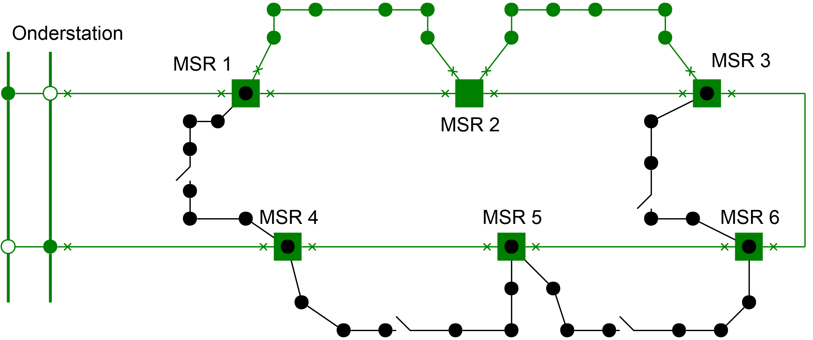
The example in figure 2.10 shows a closed ring-shaped 20 kV transport network (green) with 6 switching stations or substations (MSR 1 through MSR 6). The transport network is designed with a single fault reserve without energy interruption, so that one of the transport connections can be out of service. The protection is similar to that of an MV transport network. The distribution section is formed by feeders that are installed between two switching stations or substations. These feeders may or may not have network openings. If there are no network openings, as in the upper two meshed 20 kV feeders between MSR 1 and MSR 2 and between MSR 2 and MSR 3 (green), the same requirements for protection and circuit breakers apply as in meshed operated transport networks. The transport network also feeds four open operated sub-rings at the 10 kV level (black).
Flexibility is increased if the switching stations and network stations can be remotely measured and controlled. In this example, the 20 kV transmission network and the 20 kV sub-rings have a single fault reserve without energy interruption. The open-operated sub-rings at the 10 kV level have a single fault reserve with energy interruption.
Low voltage networks function to connect all customers with a low voltage connection for capacities up to 300 kVA (at 3 phases, 400 V, maximum 435 A) to the electricity grid. The network configuration is highly dependent on the local situation. In principle, low voltage networks are radially laid out from a substation and usually have no connection to another substation. However, there are also situations with ring-shaped and meshed structures.
Figure 2.11 illustrates the radial structure. The substations are indicated with solid squares. There is no fault reserve. If necessary, a generator truck can be used to restore the supply.

In older urban distribution networks, meshed LV networks are sometimes found, which are also operated in a meshed manner. Figure 2.12 provides an example of this. In these networks, the feeding distribution substations must be located in the same MV string.

In general, meshed operation leads to better voltage regulation and less network loss. A major disadvantage, however, is that in the event of a fault, it results in larger short-circuit currents. More complex protection is also required. Therefore, there is a trend to lay out new low-voltage networks radially.
In all networks, at places where connections converge or split and where transformation to a different voltage level occurs, stations are present. Depending on the function of the network and the impact of outages on the power supply, the design incorporates varying levels of redundancy. The degree of station automation and the extent of protection also depend on the function. The main stations are substation (OS), switching station (SS), control station (RS), and network station. A substation is fed from the HV or EHV network and supplies an MV transmission network or MV distribution network. A switching station and a control station are fed from the MV transmission network and supply an MV distribution network. A network station is fed from the MV distribution network and supplies an LV network. These stations are further discussed in this chapter.
Each station is built around a busbar system. A busbar system consists of three robustly constructed aluminum or copper conductors (one for each phase), to which all equipment for incoming and outgoing connections is attached. In open installations, aluminum tubes are often used for the busbars, while in closed installations, copper strips are used.
Based on requirements regarding operation, reliability, and installation and maintenance costs, a choice is made between single and double busbar systems.

The single busbar system, as shown in figure 2.13, is the simplest configuration. The biggest disadvantage of this system is that there is no backup available during maintenance or failure of the busbar system. However, the busbar system can be divided into sections. These sections are then connected to each other with a switch. In the case of a control station, the two busbar sections are connected via a regulating transformer (see figure 2.24). Single busbar systems are used in medium voltage (MV) and low voltage (LV) distribution networks.

In the HV stations, TS stations, and the important MV stations, double busbar systems are used, as shown in figure 2.14. In this setup, two busbar systems are used, which can be interconnected. Both busbar systems can be used separately, but it is also common for only one busbar system to be used while the other is on standby as a reserve. The ability to switch to the reserve busbar system significantly increases operational reliability compared to a single busbar system. Additionally, the double busbar system offers more operational flexibility, with the main advantages being the ability to perform maintenance, limit short-circuit currents, and distribute the load.
In a substation, cables and transformers are connected to the bus systems via bays. A bay can be seen as the electrical connection point on a bus system for a cable, a line, or a transformer. The connection between two bus systems in a double busbar system is also realized with a bay. A bay consists of a set of objects that are functionally related from an operational perspective, such as: busbar disconnectors, circuit breakers, and grounding switches (associated with a cable, line, or transformer).
There are many configurations for busbar systems, but with a view to operations, reliability, and costs, only a few types are used. There are four configurations to distinguish for the switchgear layout; the way in which the fields are connected with a busbar system:

When a double busbar system is applied at MV level, there are two possible configurations for coupling to the busbar system:
The busbar system and the connected primary objects in the substation are protected with relays for fault detection and a circuit breaker to disconnect the fault. Chapter 6 delves deeper into the components and concepts of protection. Figure 2.16 shows the current protection of the three phases of an MV field in a substation. The protection here is implemented with electromechanical relays. During modernization, electronic and digital relays are used. Increasingly, the stations are also automated, making them remotely controllable.
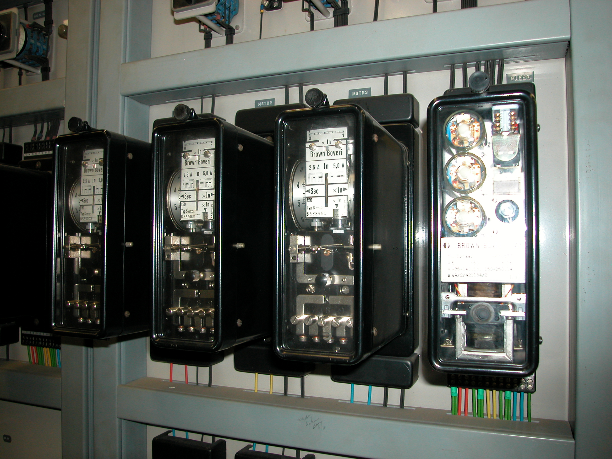
In a substation (SS), the voltage from the HV or MV level, at which electrical energy is transported, is transformed to a lower voltage level. After the voltage transformation, the SS feeds an MV transport or distribution network with typically around twenty outgoing cables. In many cases, the MV network is fed directly from an HV network by the SS, without the intervention of an MV level. A substation feeds an MV network for a region with a power capacity in the range of 30 to 100 MW (Table 2.1). Due to this important function, substations are generally designed with sufficient reserve elements to immediately switch over after a single fault, preventing prolonged interruptions in supply.
Figure 2.17 provides a schematic overview of a high-voltage/medium-voltage (HV/MV) substation. The substation is fed from the top by two connections from the HV network. The 150 kV connections are each linked to the double busbar system through a bay. The bay contains a circuit breaker and two busbar selector switches. A coupling bay allows the two 150 kV busbar systems to be interconnected. The substation contains three transformers, one of which is on standby as a reserve. The left and right transformers each feed a part of the MV distribution network, usually through a closed installation. The middle transformer can be switched to either the left or right part of the MV installation.

The aforementioned matters are further explained using the 150/50/10 kV Kattenberg substation near Arnhem. The station is connected to the high-voltage (HV) transmission network in five directions. At the extra intermediate voltage level, the station feeds the regional transmission network in three directions. At the medium-voltage (MV) level, the regional distribution network is fed from this station. Figure 2.18 shows the schematic layout of the substation. Compared to Figure 2.17, the diagram is simplified. The circuit breakers are omitted. The busbar selectors are represented with open and closed circles indicating the position of the contacts. The HV busbars and intermediate voltage busbars are operated in parallel, and the MV busbars are operated separately. In the diagram, both HV/intermediate voltage transformers are operated in parallel. Of the three intermediate voltage/MV transformers, the middle one is on standby as a reserve. The MV double busbar system and the MV cable fields are shown in a simplified manner. The supply of the MV distribution network is divided between the two transformers in operation.
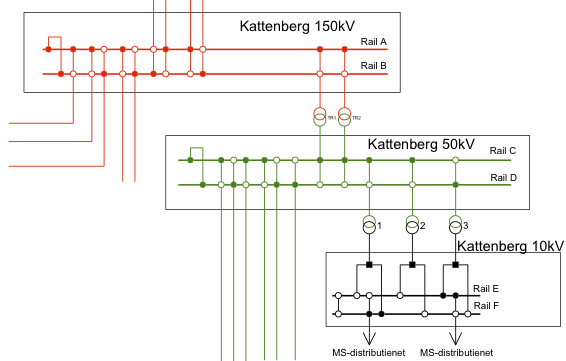
Figure 2.19 provides a nice overview of the entire substation. It roughly consists of a high-voltage section, on the left in the photo, and a transformer section, at the top right in the photo. In the middle of the high-voltage section is the double busbar system, which is configured in a U-shape: one busbar system is essentially folded around the other busbar system.
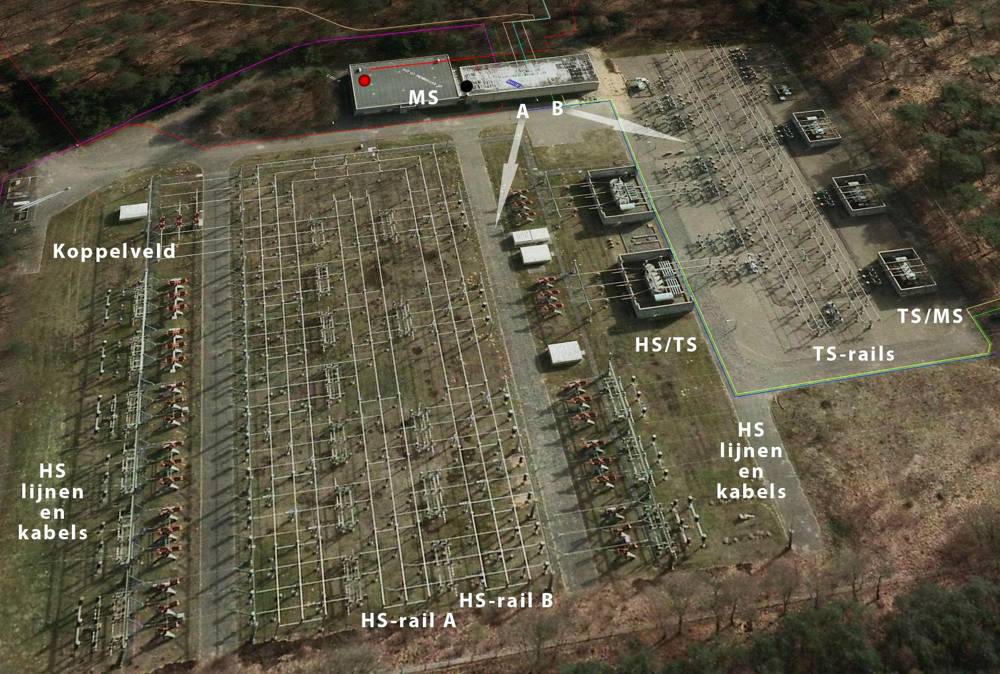
The advantage of the U-shape is that it saves space. The busbars themselves are made of sturdy aluminum tubes, which are held in place with insulators.
Both busbar systems are connected with the coupling field, located at the top left of the photo. In this substation, both busbar systems are normally operated in a coupled manner. In the event of a fault in the substation, the coupling field is immediately opened.
The incoming and outgoing high-voltage (HV) lines and HV cables are located on the left and right of the double busbar system in the photo. Each line or cable is connected to one of the two busbar systems via a disconnector, a circuit breaker, and the busbar selection disconnectors.
In the middle of the photo, two HS/TS transformers of 100 MVA each are visible. The transformers are connected to the HS double busbar system and the TS double busbar system via a disconnector, a circuit breaker, and busbar selection disconnectors.
The TS double busbar system is assembled in the same way as the HS double busbar system. Due to the lower voltage, it is more compact than the HS double busbar system. Cables are connected to the TS double busbar system that supply the region around the northern part of Arnhem. To the right of the TS double busbar system, three TS/MS transformers, each with a capacity of 14 MVA, are visible. These transformers are not operated in parallel, and one of the three is kept on standby as a reserve.
The medium-voltage side of each TS/MS transformer is connected to the enclosed medium-voltage switchgear, which is located in the medium-voltage room. This is visible at the top of the photo. From the medium-voltage room, the medium-voltage cables, represented by the colored lines, depart.

In the photo of figure 2.19, two arrows (A and B) indicate the viewing direction of photos taken in the substation. The photo of figure 2.20 is taken in the viewing direction indicated by A. The photo shows the high-voltage double busbar system and the high-voltage/medium-voltage transformers. On the right side of the photo, the end of the U-shape of high-voltage busbar system A is just visible. Under the pipes of the double busbar system are the busbar selection switches of the fields. To the right of the center of the photo, it is visible that the three busbar selection switches of the front high-voltage/medium-voltage transformer are connected to high-voltage busbar system A. In the center of the photo, the three circuit breakers of the high-voltage side of the front high-voltage/medium-voltage transformer are visible. The circuit breakers are connected to the transformer with three aluminum conductors (implemented with pipes). For environmental and safety reasons, the transformers are placed in concrete enclosures.
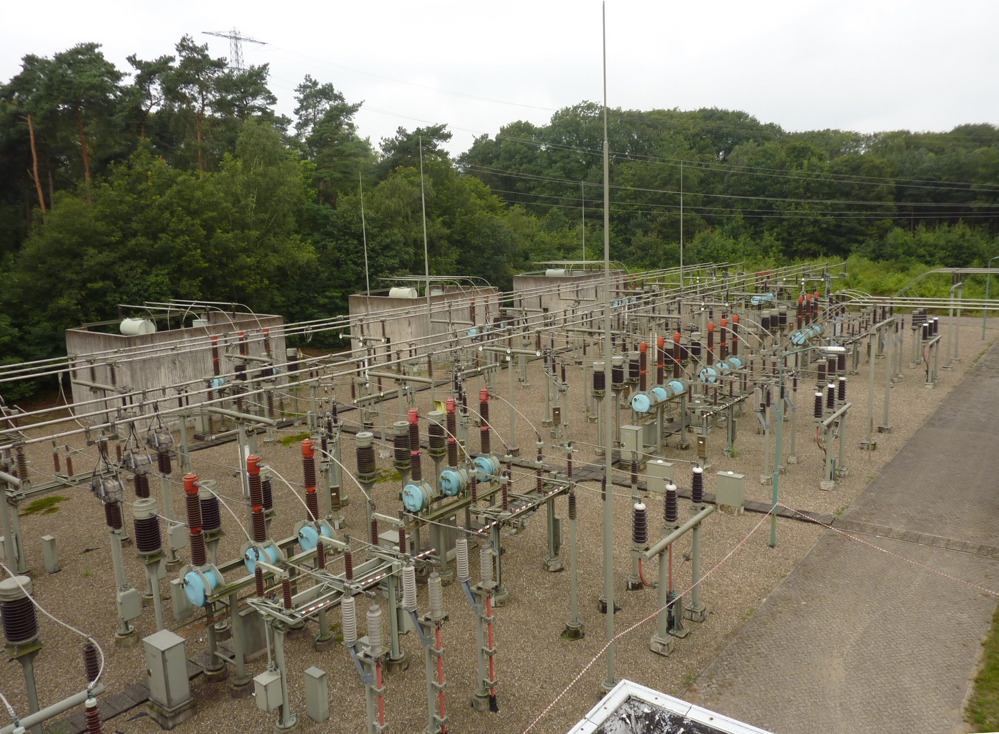Figure 2.21 shows the TS section of the substation, viewed in direction B from the overview photo in Figure 2.19. On the right side of the photo, the two sets of three aluminum conductors, implemented with pipes, are visible, which come from the two HS/TS transformers. These are connected to the TS double busbar system via fields (disconnector, circuit breaker, and busbar selection disconnectors).
The double busbar system is configured in an I-shape and consists of two sets of three aluminum tubes, which are held in place by insulators. The busbar selection disconnectors are located beneath the double busbar system. In the center of the photo, the circuit breakers and disconnectors for the incoming and outgoing cable connections are visible. In the foreground, a 50 kV circuit with single-core cables is visible, alongside a 50 kV circuit with a three-core cable. In the background, the three TS/MS transformers are visible.

Figure 2.22 shows the implementation of a field. From right to left, the following are visible in sequence: support insulator, voltage transformer, disconnector, circuit breaker, current transformer, open busbar selector switches for the front bus system, and closed busbar selector switches for the rear bus system.
A switching station (SS), also known as a distribution station, connects an MV distribution network to the MV transmission network, as shown in figure 2.23. In a switching station, the incoming fields of the transmission connections are converted at a constant voltage level into multiple outgoing fields for distribution.
The SS is usually equipped with a single busbar system that consists of two parts, which can be connected to each other using a bus coupler. The switching station is designed without redundancy and there are no spare components available. In case of a failure, switching must be done to surrounding substations and switching stations.
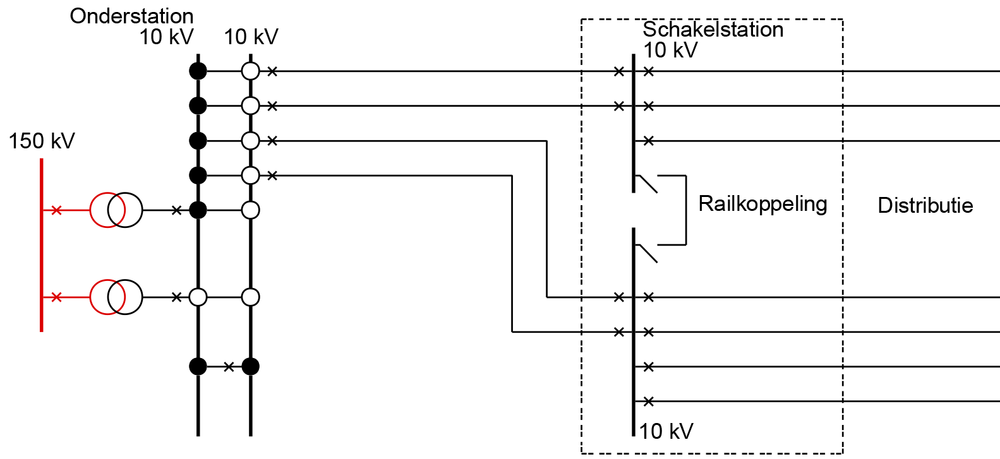
In a control station, the incoming fields are converted to a multiple of outgoing fields at a constant voltage level. A regulating transformer is installed in the control station to compensate for the voltage loss in the incoming cables. The control station, like the switching station, is designed without redundancy, and there are no spare components available. In case of a failure, switching must be done to surrounding substations and switching stations.
The regulating transformer can be taken out of service with a 'bypass' connection. In case of a failure in the regulating transformer, it is switched off. The power supply is restored by closing the circuit breaker of the bypass. Figure 2.24 illustrates this.
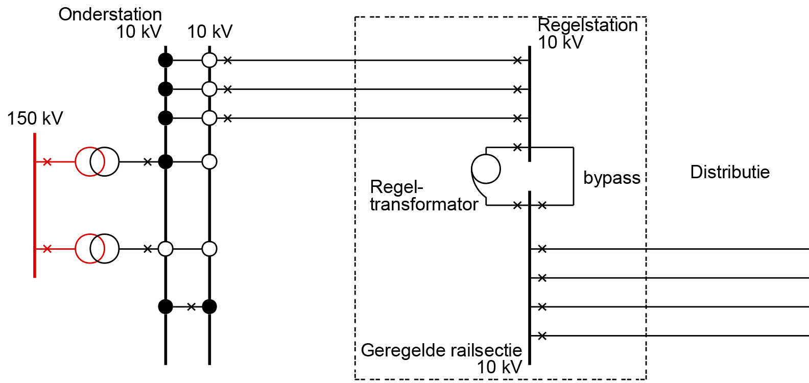
In a network station, also known as a distribution station, medium voltage room (MSR), or Ring Main Unit (RMU), the low voltage network is powered from the medium voltage network. These stations are always constructed as single units without spare components. A malfunction in the station leads to a power interruption, which can be restored by deploying a generator.
Network stations essentially consist of:
A network station is located in an MV string between the power supply point and the network opening. The incoming and outgoing MV cables are connected to the MV busbar. In some cases, the MV busbar is equipped with a B-field (protected field) with a circuit breaker to secure a new string in the MV network. This network configuration reduces the number of outage consumer minutes. The transformer is protected with high-voltage fuses and a load break switch or with a circuit breaker with maximum current/time relays. The LV distribution rack is a single busbar system with fuses for the transformer and the outgoing distribution cables. The station supplies an LV distribution network with up to 12 outgoing cables. Figure 2.25 illustrates this.
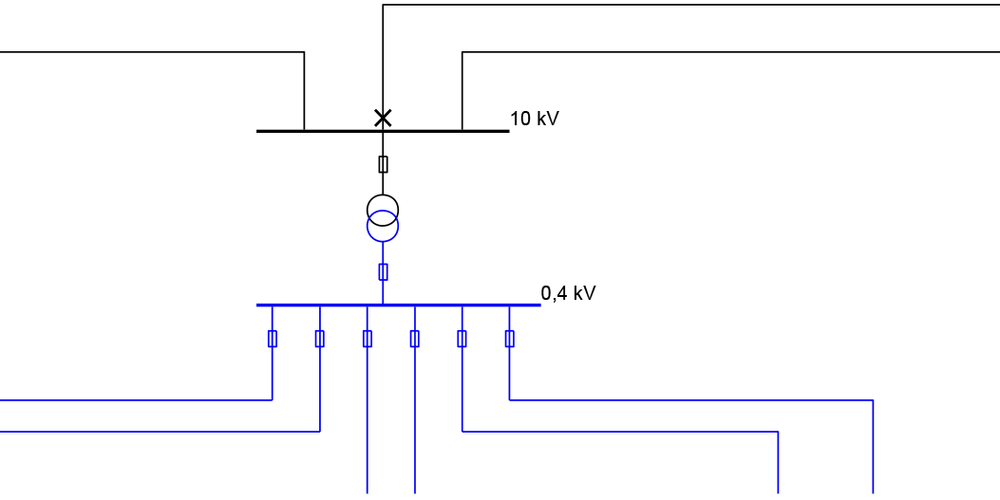
The Electricity Tariff Code of the NMa specifies how a connection must be realized (Tariff Code, 2009). It outlines how the cut, the connection, and the protection must be implemented and where the transfer point is located. The following definitions are used in this context:
The tariff code distinguishes between 7 desired connection categories:
The following paragraphs will further explain these situations. Some companies use different thresholds based on their own practice and experience, and therefore use different terminology.
The standard method for connections up to and including 1 x 6A is on the low-voltage cable, on the auxiliary conductor of the low-voltage cable, or on the public lighting (PL) cable of the grid operator. The network is switched by the grid operator, for example, for public lighting.
Figure 2.26, Figure 2.27, and Figure 2.28 illustrate the three configurations for these connections.
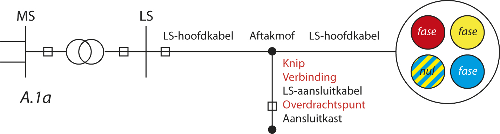
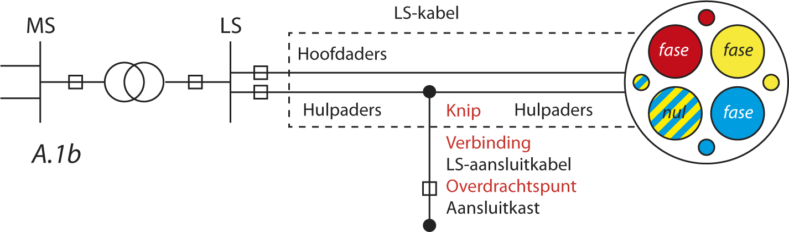
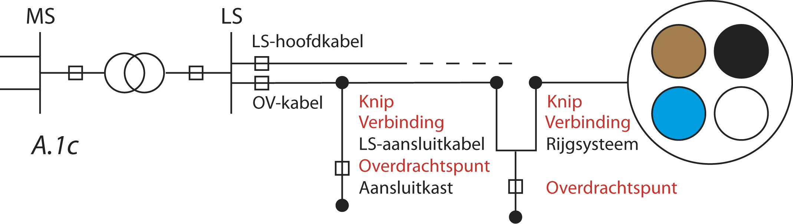
The standard method for connections from 3 x 25A up to 60 kVA is on the low-voltage cable:
The connection box, the meter board, and the kWh meter are part of the connection service provided by the network operator. The customer can choose from several configurations for the connection, such as 3 x 25A, 1 x 35A, and 1 x 25A. Figure 2.29 illustrates the configurations for these connections.

The standard method for connections from 60 kVA up to and including 300 kVA is at the nearest substation in the network of the grid operator:
The connection box, the meter board, and the kWh meter are part of the connection service provided by the network operator. Figure 2.30 illustrates the implementation forms for these connections.
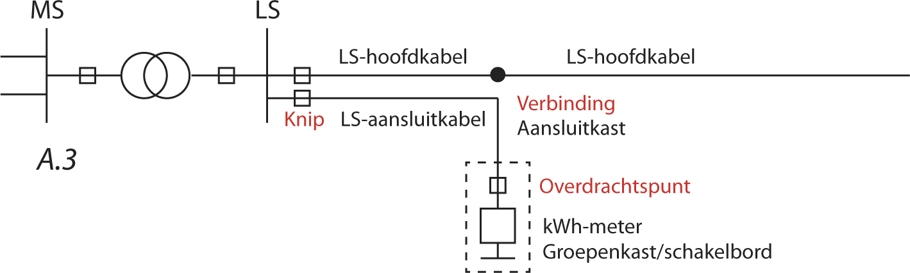
The standard method for connections from 0.3 MVA to 3 MVA is looping into the medium voltage network of the grid operator:

Both medium voltage (MV) connection cables are laid in the same route. In the connection box, an MV measuring field with measuring transformers is installed. The MV switchgear is housed in a space provided by the customer. Figure 2.31 illustrates the configurations for these connections.
Up to 630 kVA, a compact station is often used in which the transformer, switchgear, and low-voltage rack are placed together. This solution is more cost-effective for the consumer than requesting a 'pure' medium-voltage connection, which also requires a medium-voltage measurement and a circuit breaker to be installed.
This connection is realized by offering a transformation step and measuring at the low-voltage level. This measurement is then recalculated to a medium-voltage level measurement. Up to 630 kVA, a compact station is often used, in which the transformer, switchgear, and low-voltage rack are placed together in a small housing. This solution is more cost-effective for the consumer than purchasing a pure medium-voltage connection with a medium-voltage measurement and a circuit breaker. When establishing the connection, the customer is responsible for providing a transformer and the corresponding housing (the compact station). The grid operator coordinates the installation of the connection with the installer.
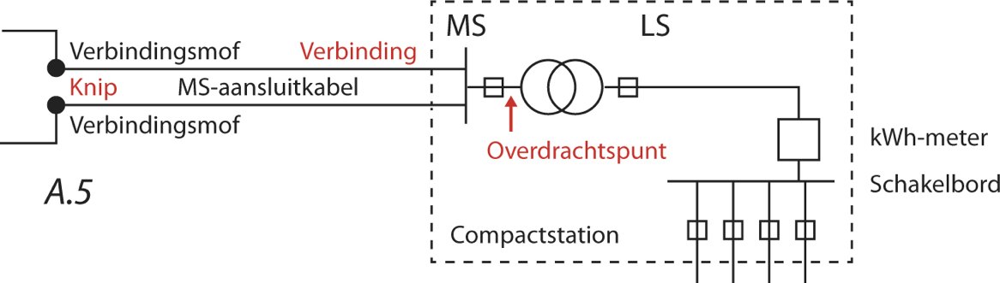
The MV connection cables are located in the same route. In the connection box, an MV metering field with measuring transformers is installed. The MV switchgear is housed in a compact station or a space provided by the customer. Figure 2.32 illustrates the configurations for these connections.
The standard connection method is to a medium-voltage busbar of a supply or switching station:
There is a measuring field present in the customer's purchasing station. Figure 2.33 illustrates the implementation.
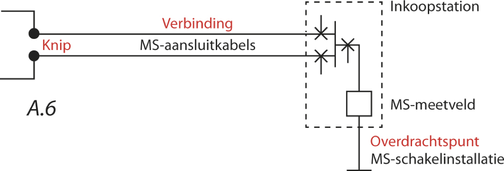
For capacities above 10 MVA, there is no prescribed standard connection method. The basic principle is to connect at the nearest point in the network of the grid operator where sufficient capacity is available. The customer conducts a study with the grid operator for the design of the connection. Ultimately, the grid operator implements the cut, the connection, and the protection.
The rates are charged based on pre-calculated project costs. This provision in the Tariff Code gives new customers with a power demand above 10 MVA a slight location incentive. When a customer wants to establish themselves in a technically less favorable location and get connected, they are confronted with high costs. For this reason, the customer might choose to establish themselves in a technically more favorable location instead.
There are many possibilities for creating a new network design. In practice, however, the design is largely determined by the constraints. For instance, most network designs are made for an expansion of an existing situation. In those cases, the integration is fixed by the power supply and the connection to other existing parts of the distribution network.
The density of the high-voltage substations affects the supply method of the medium-voltage distribution network. The distribution network can be directly supplied from a substation or via a switching or control station. Other factors include:
The number of substations is primarily determined by the electricity demand at the low voltage level. A logical consequence of this is that the distribution network at the medium voltage level is largely determined by the connection needs at the low voltage level and for large customers at the medium voltage level, rather than by the structure at a higher voltage level.
Phase to Phase is onderdeel van Technolution. © 2009-2021